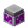
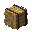
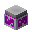
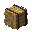
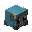
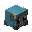
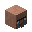
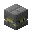
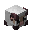

BeForever小游戏
服务器类型：纯小游戏服
服务器主版本:1.18.1
支持版本：1.12.2-1.18.1
内含小游戏： 起床战争、饥饿游戏、躲猫猫、
起床战争、饥饿游戏、躲猫猫、 烫手的山芋、
烫手的山芋、 TNTrun、
TNTrun、 雷神之锤、建筑战争、丢鸡蛋、
雷神之锤、建筑战争、丢鸡蛋、 职业战争等
职业战争等
BeForever的含义：
男孩对女孩说："我是你的BF"，女孩问："什么是BF？"
男孩说：Bestfriend
后来他们恋爱了，男孩对女孩说："我是你的BF"，女孩问："什么是BF？"
男孩说：Boyfriend
后来他们结婚了，有了一个可爱的宝宝，男孩对女孩说："我是你的BF"，女孩问："什么是BF？"
男孩说：Baby's father
后来他们老了，他牵着她的手对着夕阳说："我是你的BF"，她说："这回我知道了"
她含着泪说：Be Forever
服务器起源：7年前，我是一位开着蛤蟆吃服务器的腐竹，结识了非常多的朋友，但是因为一些特殊原因，所以我的服务器总是断断续续开着的，这也导致以前一些玩家失去了对服务器的热爱，也失去了对MC的热爱，直到一年前，我连续开了一年的1.16.5的面板服务器，但是开服务器太浪费我时间了，例如，早上就要不停地做宣传，晚上要更新玩法，并且服务器需要花大量的资金，所以开了一年之久我的服务器也关服了，关服当天，我本打算再也不开服务器了，但是，当我解散群聊当天，有十几个QQ消息在不停地闪烁，他们都希望我继续开下去，因为玩了这么久的服务器难免不了产生与玩家之间的感情，我最终还是委婉拒绝了。直到几个月前，一次偶然机会让我认识一位朋友，他赠与我一个VPS，这也让我有了一个服务器可用......这也是这个服务器的起源。
7年前，因为对MC的热爱，所以我们相聚在一起，7年后，或许有那么一次，我会对MC说："我是你的BF"。
服务器特色：
一、支持手机玩服务器，并且，可与身边最多2名玩家一起游戏
二、多样化的游戏加入方式，可通过NPC加入游戏，或者通过牌子加入游戏
三、活跃的腐竹与长期开放的服务器。
四、不断更新的游戏地图、游戏种类。
五、高频的CPU，让游戏告别卡顿。
服务器的规则：禁止开挂、禁止破坏场地，文明发言，无了。
小游戏介绍：
躲猫猫(Hide And Seek)：拥有动物躲猫猫和方块躲猫猫，分为两大阵容：寻找者和躲藏者，寻找者可通过kill伪装的求生者来赢得胜利，躲藏者需要躲藏寻找者的追击，其中躲藏者可以通过寻找躲藏者道具来Kill寻找者，躲藏者被寻找者 Kill之后将会变成寻找者......不同于旧版本的躲猫猫，此躲猫猫躲藏者和寻找者都更新了3大道具。
"看看是谁家的兔子跑了出来？"
谁是杀手(Murder Mystery)：1-3个杀手，一个侦探其余都是平民，平民只需要躲藏起来或者侦探被kill的时候拾起弓来Kill杀手，侦探拥有一把弓需要找出杀手，其中，若侦探误KILL平民，则两个都会被淘汰出局。杀手最后30s的时候将会获得指南针用于便捷寻找平民最后杀手未在规定时间内KILL完所有平民则失败。游戏中，杀手可以右键发射飞刀，平民、杀手、侦探都可以拾取黄金换取药水，侦探的箭有限。
"你们一个也跑不掉......"
建筑战争(Build Battle)：分为SOLO和TEAM，玩家可以在创造模式下建筑符合主题的建筑，游戏结束后可为其余玩家进行投票。其中，用方块右键村民可以更改地皮颜色。
"谁能造出一个称心如意的大别墅？"
饥饿游戏(Hunger Game)：开始时可以输入/hg kit <职业> 来选取职业，玩家进入游戏之后通过搜寻箱子最后kill掉所有人即可获胜，指南针可以显示附近玩家位置，木棍右键可以显示玩家位置，但有次数限制。
"谁能成为最后的生存者？"
 TNT跑酷(TNT Run)：开始时脚下的方块会消失，只需最后存活在上方即可获胜。游戏开始前，玩家可以购买小道具。
TNT跑酷(TNT Run)：开始时脚下的方块会消失，只需最后存活在上方即可获胜。游戏开始前，玩家可以购买小道具。
"注意脚下"
 烫手的山芋(TNT Tag)：开始时给予速度III(如果你开了困难模式会变成速度I)会随机抽取一名玩家进行标记(头上戴着TNT，配上红色皮革衣服)，被标记的玩家通过击打无标记的玩家来避免被炸，30S后被标记的玩家会被淘汰。
烫手的山芋(TNT Tag)：开始时给予速度III(如果你开了困难模式会变成速度I)会随机抽取一名玩家进行标记(头上戴着TNT，配上红色皮革衣服)，被标记的玩家通过击打无标记的玩家来避免被炸，30S后被标记的玩家会被淘汰。
"你对爆炸声喜欢还是畏惧？"
 起床战争(BedWars)：开始必须选队伍，否则会采取观战模式，进入游戏之后，玩家通过获取铜锭、铁锭、金锭而与村民兑换资源，铜锭在出生点即可获取，铁锭在出生点附近，而金锭在地图中心位置需要玩家与村民交易方块来搭路，只需要床未被其他团队拆，则玩家可以无限复活，玩家的床被拆除后，若玩家被kill，则被淘汰。玩家可以与村民兑换方块建筑类、武器类、药水类、防具类、陷阱类等来赢取比赛。
起床战争(BedWars)：开始必须选队伍，否则会采取观战模式，进入游戏之后，玩家通过获取铜锭、铁锭、金锭而与村民兑换资源，铜锭在出生点即可获取，铁锭在出生点附近，而金锭在地图中心位置需要玩家与村民交易方块来搭路，只需要床未被其他团队拆，则玩家可以无限复活，玩家的床被拆除后，若玩家被kill，则被淘汰。玩家可以与村民兑换方块建筑类、武器类、药水类、防具类、陷阱类等来赢取比赛。
"谁不喜欢在床上睡懒觉？"
丢鸡蛋(Spleef)：分为掘一死战、丢鸡蛋、弓箭射击三个小游戏，丢鸡蛋中，玩家通过右键丢出雪球来让对方脚下的方块消失，而掘一死战中玩家通过用铲子挖空对方脚下方块来获取胜利，弓箭射击类似于丢鸡蛋玩法。
"小心，鸡蛋来咯"
 雷神之锤(Quake)：与射击类游戏类似，分为SOLO和TEAM两大类，玩家可以右键锄头发射炮弹kill敌人来获取分数，游戏无结局，可以通过右键门来离开游戏。
雷神之锤(Quake)：与射击类游戏类似，分为SOLO和TEAM两大类，玩家可以右键锄头发射炮弹kill敌人来获取分数，游戏无结局，可以通过右键门来离开游戏。
"让子弹飞一会儿~~"
 职业战争(Kit Battle)：进入游戏后可以选取职业，直接离开保护区即可开始战斗，游戏无结局，但是有计分功能，玩家可以通过游玩游戏获取游戏币来购买更多职业或者升级职业。
职业战争(Kit Battle)：进入游戏后可以选取职业，直接离开保护区即可开始战斗，游戏无结局，但是有计分功能，玩家可以通过游玩游戏获取游戏币来购买更多职业或者升级职业。
"你是战士还是法师，还是....袋鼠、蜘蛛侠？"
 彩蛋射击(Paintball)：开始游戏后，玩家通过右键发射雪球来KILL敌人，游戏中，通过得分可以购买道具:三连发、超远射程、增加生命等，玩家也可以通过游玩获得游戏币，购买特殊功能的帽子最后游戏以达到目标获得胜利。
彩蛋射击(Paintball)：开始游戏后，玩家通过右键发射雪球来KILL敌人，游戏中，通过得分可以购买道具:三连发、超远射程、增加生命等，玩家也可以通过游玩获得游戏币，购买特殊功能的帽子最后游戏以达到目标获得胜利。
"一起丢雪球吧，把人带走那种"
 战桥突围(The Bridge)：开局时可选择职业，游戏开始中，玩家通过借桥搭方块来跑到对方营地，最后跑入坑内以此突围成功，玩家游戏过程中可以不断复活，前提是未被突围成功。游戏有中途队伍换边功能，并且为了防止游戏不结束，采用强制结束功能，最后以突围次数或突围时间来结束比赛。
战桥突围(The Bridge)：开局时可选择职业，游戏开始中，玩家通过借桥搭方块来跑到对方营地，最后跑入坑内以此突围成功，玩家游戏过程中可以不断复活，前提是未被突围成功。游戏有中途队伍换边功能，并且为了防止游戏不结束，采用强制结束功能，最后以突围次数或突围时间来结束比赛。
"你只有一条路：往前冲"
村民保卫战(Village Defense)：此游戏可单人玩，开始前玩家可以选择职业，开始过程中会连连不断产生僵尸，击杀僵尸可以获得金币，通过与村民进行兑换更强力的武器，并且随着波数越大等级、难度越高，玩家可以拿着鞍右键村民骑在其上面来花样玩耍o(*￣▽￣*)ブ ，最终村民全部被KILL后游戏结束，或者所有玩家被KILL后结束。
"唯一的目标是都存活下去......"
 彩虹大作战(Block Party)：开始时手上会拿着带有颜色的方块，一段时间后不同于手上方块颜色的方块会消失，玩家通过站在与手上颜色相同的方块上来避免淘汰，随着游戏时长的增加，消失速度会越来越快。
彩虹大作战(Block Party)：开始时手上会拿着带有颜色的方块，一段时间后不同于手上方块颜色的方块会消失，玩家通过站在与手上颜色相同的方块上来避免淘汰，随着游戏时长的增加，消失速度会越来越快。
"别看了，眼睛要瞎了~~"
战墙X(The Walls X)：和战墙玩法差不多，开局前可以选择职业，开局时和生存玩法一样，通过箱子搜寻物资、挖矿来制作强力装备，到时间之后墙会消失，玩家此时需要击败对方领地处的凋零来防止玩家死亡后无限复活，最终凋零死亡后，存活的玩家不能继续复活......
"它倒下的那一刻，我就知道有大事降临了"
空岛战争(Sky Wars)：与饥饿游戏类似，唯一的不同是空岛战争可以放置方块。倒计时开始的时候，玩家会进入玻璃密闭空间，游戏开始的时候玩家脚下的方块会自动消失，此时玩家可以搜寻箱子内的物资，然后搭路......
"有时候运气也是实力的一部分"
抢羊战争(Sheep Quest)：分为4个队伍，游戏开始时，玩家需要在中间大厅用鞍右键以抓羊，每只羊生成时间有冷却，玩家最多可以一次性拿三只羊，地图可能生成特殊羊，一只特殊羊+3分，而普通羊+1分，玩家抓到羊之后需要放到自己领地处，特别注意，任何敌方阵营的玩家攻击你时，你身上的羊会掉落，而游戏过程中玩家也可以偷别人家里的羊，最终以分数最多的队伍获得胜利。
"羊儿往哪跑？"
抛射TNT(Bomb Lobbers)：分为两队，游戏开始时候只需右键即可抛射TNT并且将会在几秒后爆炸，最终将对方阵营的敌人淘汰即可获胜。
"TNT和雪球你要哪个？小孩子才做选择，我都要"
 黎明杀机(Dead By Day Light)：1V4非对称类游戏，1指的是监管者一人担当，需要攻击求生者并将其放到树桩上，一段时间后若求生者未被救出则可淘汰一个求生者，以此类推，需要在求生者修理5台密码机前将所有逃生者淘汰，4指求生者X4，求生者需要破译密码机，然后等大门通电后通过大门离开这个场地，中途会有监管者阻挡，其中，求生者被击倒时可以通过挣扎离开监管者手中，而且求生者可以拯救被放置在树状下的另一求生者。
黎明杀机(Dead By Day Light)：1V4非对称类游戏，1指的是监管者一人担当，需要攻击求生者并将其放到树桩上，一段时间后若求生者未被救出则可淘汰一个求生者，以此类推，需要在求生者修理5台密码机前将所有逃生者淘汰，4指求生者X4，求生者需要破译密码机，然后等大门通电后通过大门离开这个场地，中途会有监管者阻挡，其中，求生者被击倒时可以通过挣扎离开监管者手中，而且求生者可以拯救被放置在树状下的另一求生者。
"死亡不是解脱......"
更多游戏到服务器里面体验吧😀